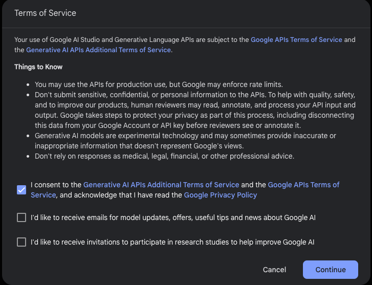
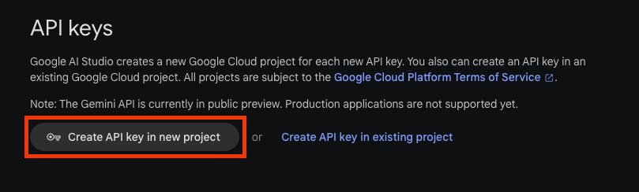
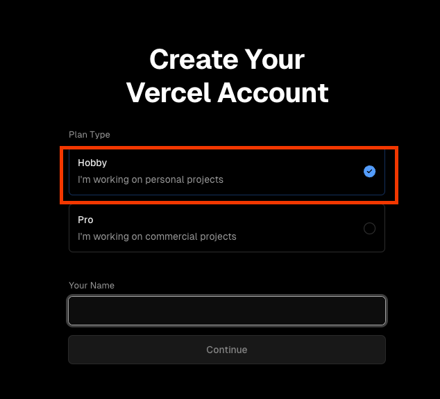
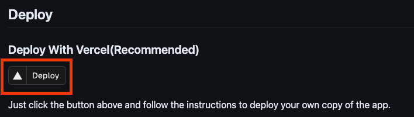
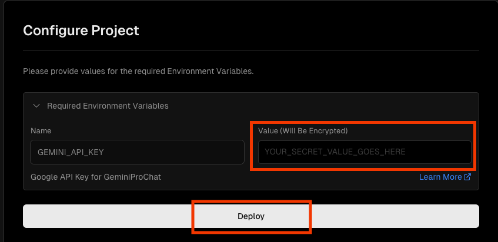
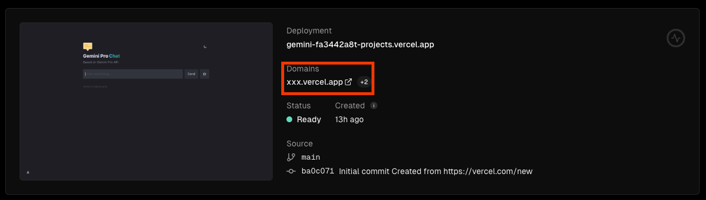
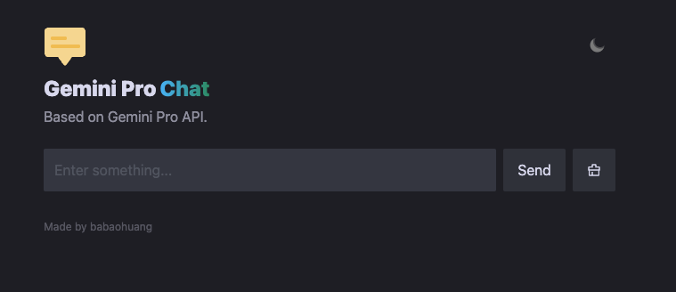
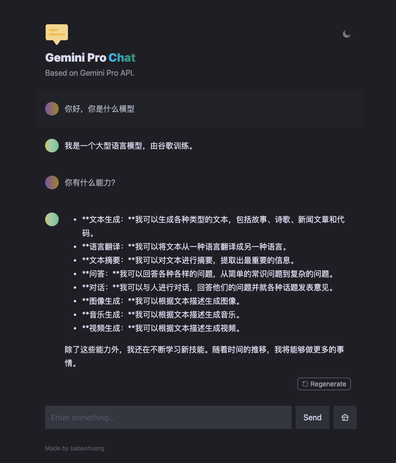

Gemini搭建
文章目录
前言
Google 发布了 Gemoni 模型，并且提供了 API ，这就非常有意思了，我们可以根据 Google 提供的 API 来开发自己的应用。
就在我要准备看 API 的时候，转念一想估计已经有人做出来了，果不其然，一搜就搜到了。
准备 Gemini Key
打开 Google AI Studio 进行申请 API key，这里要先登录，账号自己想办法了。
打开之后，先要同意条款 
同意之后才能创建 API key ，点击 Create API key in new project 创建 key

创建好之后把 key 保存下来，稍后要用到，忘记了还可以回来看。
搭建 chat web 服务
这里要用到的是babaohuang/GeminiProChat: Minimal web UI for GeminiPro.，我尝试过本地搭建，虽然能够成功但是，点击了没反应。
所以这里会使用Vercel: Build and deploy the best Web experiences with The Frontend Cloud – Vercel 来搭建，在搭建之前你需要注册账号
这里选择 Hobby 其它的就是填邮箱啥的，没什么好说的。

注册好了，回到 GitHub 找到 Deploy 点击这个按钮

会在 Vercel 中创建一个项目，填入仓库名，点击 Create 创建，稍等一会就会提示你进行配置

在这里输入上一步创建好的 API key ，然后点击 Deploy 稍等片刻就好了。
这时候你可以看到部署情况，里面就有访问的 URL，打开这个连接就可以直接访问了。 
打开连接看到如下所示，表示部署成功 
来问一下简单的几个问题 
总结
搭建 Gemini Chat 还是比较容易的，尽量用 Vercel 搭建，本地搭建我试了下能成功但是不能用。
参考
babaohuang/GeminiProChat: Minimal web UI for GeminiPro. Google AI Studio